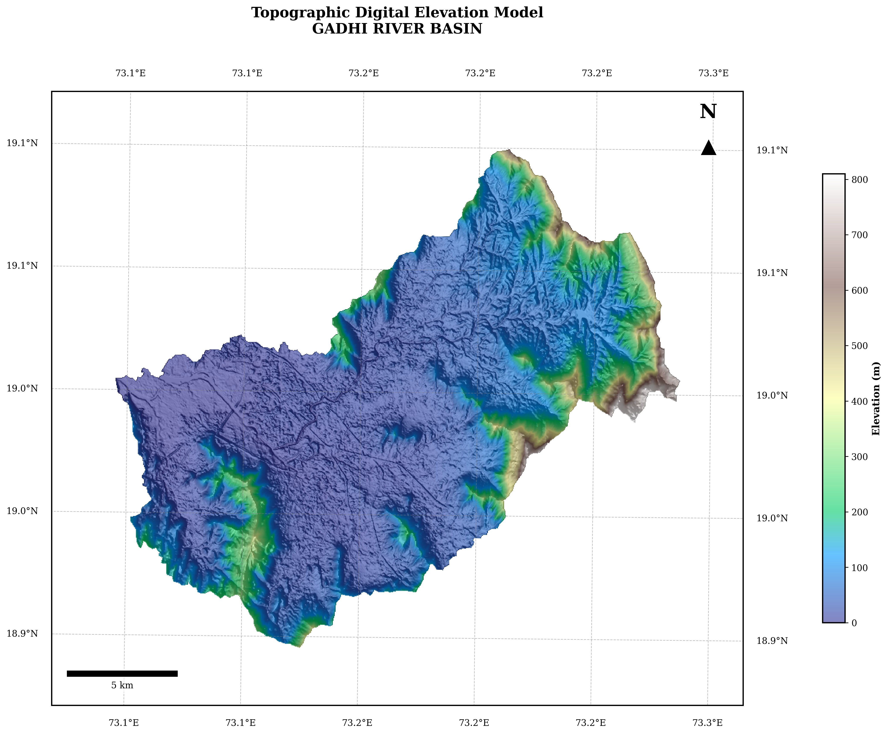
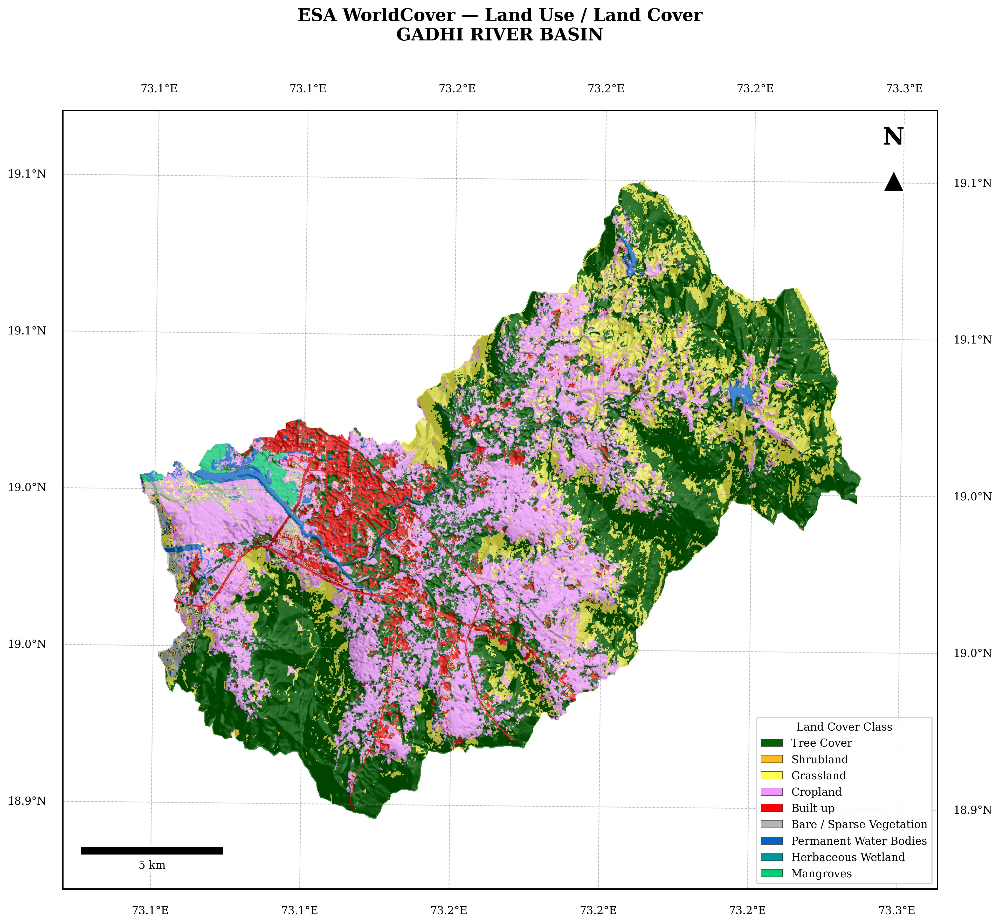
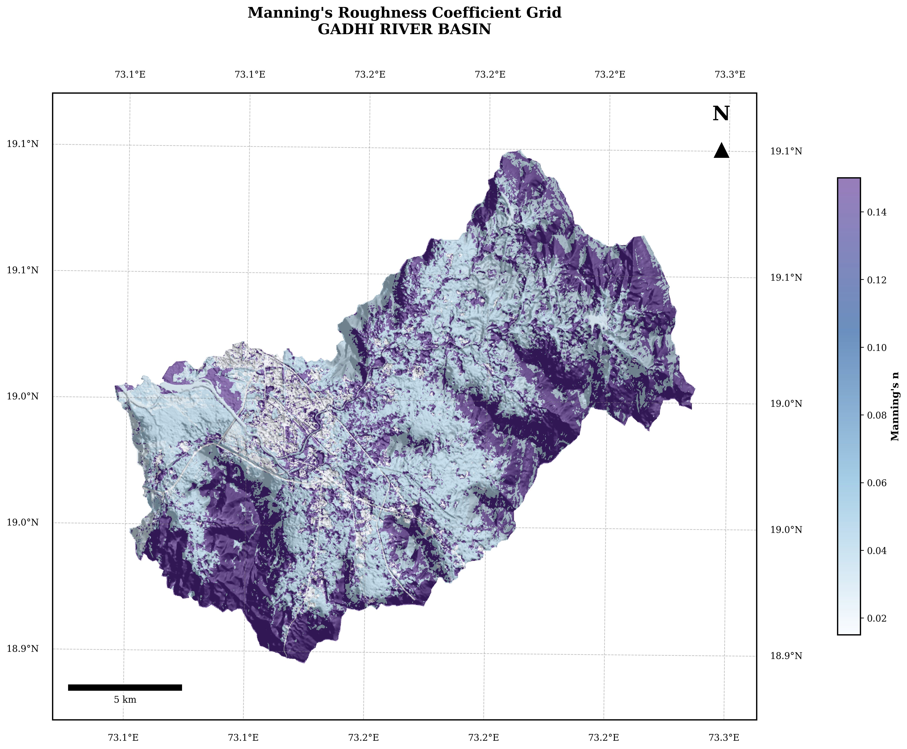
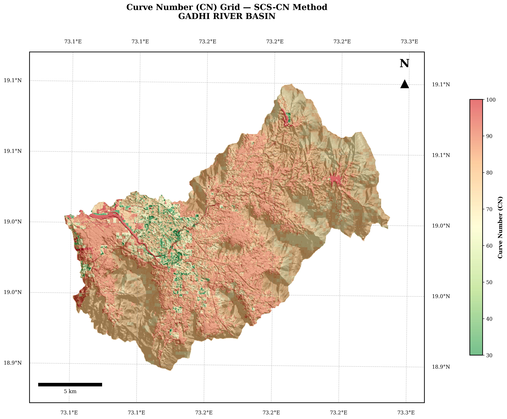
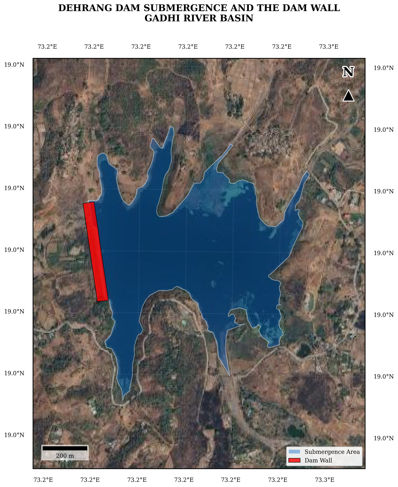

5. Dam-Break Analysis¶
5.1 Model Selection - HEC-RAS 6.6 (2D)¶
HEC-RAS 6.6, developed by the US Army Corps of Engineers Hydrologic Engineering Center, was selected for the dam breach simulation of Dehrang Dam. A two-dimensional (2D) unsteady flow modelling approach was adopted, consistent with the CWC Guidelines for Developing Emergency Action Plans for Dams (2016) and CDSO Dam Safety Guidelines (2018). The 2D approach is strongly recommended over 1D methods for complex floodplains with multiple flow paths, backwater areas, and areas of significant lateral spreading, all of which are characteristic of the Gadhi River floodplain downstream of Dehrang Dam.
Key capabilities of HEC-RAS 6.6 that make it appropriate for this study include:
-
2D Unsteady Diffusion Wave Equation Set applied on an unstructured mesh, providing computationally efficient and numerically stable routing of the dam-break flood wave across the downstream domain.
-
Simultaneous modelling of a Storage Area (SA) representing the reservoir volume-elevation relationship and a 2D Flow Area (2D FA) representing the downstream floodplain.
-
SA-2D Connection with user-specified breach geometry and progression, directly linking reservoir drawdown to downstream flood wave generation.
-
Mixed subcritical and supercritical flow regime handling via an implicit diffusion wave or full momentum solver, important for steep reaches immediately downstream of the dam.
-
Native production of output rasters: Maximum Water Depth, Maximum Velocity, Arrival Time, Maximum WSE, and Depth x Velocity (D x V) hazard classification maps.
-
Direct integration of GIS terrain data (Copernicus DEM GLO-30) and LULC-based Manning's roughness assignments.
5.2 Dam-Breach Scenarios¶
Two failure scenarios were modelled for Dehrang Dam in compliance with CWC (2016) EAP guidelines which require analysis of at least the Probable Maximum Flood overtopping condition and a fair-weather piping failure condition:
5.2.1 Scenario A - Overtopping Failure (Flood-Induced)¶
Mechanism: Progressive overtopping of the earthen embankment following inflow of the 100-year 24-hour design flood. As the reservoir fills beyond the FRL and gates reach their operational discharge capacity, water overtops the crest of the earthen bund. Continued overtopping erodes the downstream face of the embankment, leading to progressive widening of the breach.
-
Initial Reservoir Level: 90.0 m MSL (above FRL of 89.15 m MSL, reflecting pre-storm reservoir condition and rising water level)
-
Inflow Boundary: HEC-HMS 100-year 24-hour SCS Type II design flood hydrograph (peak 600.4 m3/s at Hour 14)
-
Breach Trigger: WSE reaches 90.0 m MSL
-
Breach Formation Time: 1.04 hrs (rapid embankment erosion consistent with earthen dam under sustained overtopping)
-
Final Breach Geometry: Bottom width 34 m, bottom elevation 81.4 m MSL, side slopes 1H:1V (trapezoidal)
5.2.2 Scenario B - Piping Failure (Fair-Weather / Structural)¶
Mechanism: Internal erosion (piping) initiating within the dam body or foundation at or near the riverbed level, while the reservoir is at the Full Reservoir Level under summer low-flow conditions. This scenario represents the worst-case non-flood structural failure condition and is particularly relevant for ageing earthen dams such as Dehrang Dam (constructed 1957, age 68 years), where internal erosion risk accumulates with time.
-
Initial Reservoir Level: 89.15 m MSL (Full Reservoir Level)
-
Inflow Boundary: Constant baseflow of 3 m3/s (pre-monsoon low-flow, Gadhi River)
-
Breach Trigger: Set time (piping is assumed to initiate at the start of simulation)
-
Initial Piping Elevation: 75.40 m MSL (riverbed/foundation level)
-
Breach Formation Time: 4.0 hrs (Froehlich 2008 estimate; slower initial development than overtopping)
-
Final Breach Geometry: Bottom width 23 m, bottom elevation 75.40 m MSL, side slopes 1.4H:1V (trapezoidal)
Note
The piping scenario produces a larger total outflow volume than overtopping for the same initial WSL, as the piping breach erodes to the riverbed (75.40 m MSL) rather than stopping at 81.4 m MSL, mobilising the full reservoir storage. However, the slower formation time compared to the overtopping event reduces the peak outflow rate.
5.3 Data Inputs for the Hydraulic Model¶
5.3.1 Terrain Data - Digital Elevation Model¶

Figure 5.1: Topographic Digital Elevation Model (Copernicus DEM) – Gadhi River Basin; Elevation range 0–800 m MSL
The terrain basis for the HEC-RAS 2D model was the Copernicus DEM Global 30-metre (GLO-30) product, accessed through the OpenTopography API. The GLO-30 DEM provides a horizontal resolution of approximately 25-30 m in the study area, derived from TanDEM-X radar data. The DEM was projected to the local UTM coordinate system (Zone 43N, WGS84) and hydrologically conditioned to enforce flow connectivity along the Gadhi River main channel and its tributaries. Key conditioning steps included:
-
Pit filling to remove spurious sinks in the DEM that would block flow routing
-
Stream burning along the mapped Gadhi River channel thalweg to ensure the 30 m DEM correctly represents the channel bed
-
Clipping to the study domain boundary extending from the dam toe to the downstream tidal influence zone near the Panvel Creek confluence
5.3.2 Land Use / Land Cover and Manning's Roughness¶

Figure 5.2: ESA WorldCover Land Use / Land Cover Classification – Gadhi River Basin (2021)

Figure 5.3: Manning's Roughness Coefficient (n) Grid derived from ESA WorldCover – Gadhi River Basin

Figure 5.4: Curve Number (CN) Grid – SCS-CN Method, Gadhi River Basin
Land Use / Land Cover (LULC) data was obtained from the ESRI Living Atlas 2024 Sentinel-2 derived global LULC product at 10-metre resolution. Classes within the Gadhi River floodplain domain were mapped and Manning's roughness coefficients (n) were assigned per the values tabulated in Table 9 (Section 6.1.2). The dominant LULC classes in the downstream floodplain are Mixed Forest/Vegetation (n = 0.16), Developed Low-Intensity areas (n = 0.10), and Pasture/Grassland (n = 0.030) along the river corridor.
5.3.3 Reservoir Geometry¶

Figure 5.5: Dehrang Dam – Reservoir Submergence Area and Dam Wall Location (FRL = 89.15 m MSL)
The Dehrang reservoir storage area was defined in HEC-RAS using the 2025 Elevation-Area-Capacity (EAC) survey data (Annexure I). The volume-elevation table was entered directly into the HEC-RAS Storage Area element. The FRL of 89.15 m MSL corresponds to a gross storage volume of 2,351.58 x 10^3 m3 (2.352 MCM), reflecting the post-siltation condition.
5.3.4 Spillway Representation¶
The Dehrang Dam spillway, comprising 11 Godbole-type Automatic Tilting Gates (each 8.70 m x 2.50 m, gate sill at 86.65 m MSL), was represented in the HEC-RAS SA-2D connection as a weir/gate structure with a total gated length of 111 m. The gate discharge relationship was defined based on the design head-discharge characteristics. For the overtopping scenario, gate operation is assumed at design capacity; when reservoir WSE exceeds 90.0 m MSL (the breach trigger), the breach mechanism is activated on the earthen bund section adjacent to the spillway at Centre Station 159 m.